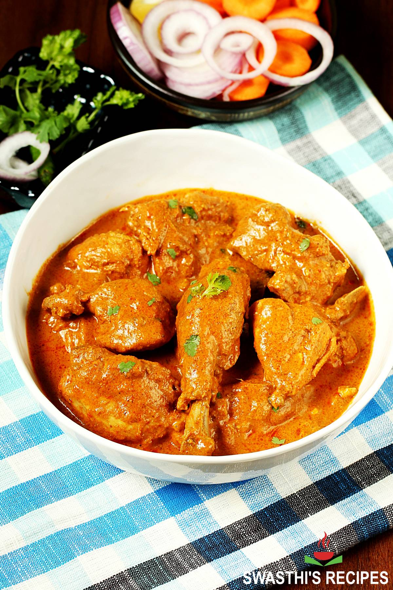

Biryani

Korma is a rich and flavorful Pakistani dish that is popular both in Pakistan
and around the world. It is a type of curry that typically consists of tender
meat or vegetables cooked in a creamy and aromatic sauce. The sauce is made by
blending a variety of spices such as coriander, cumin, turmeric, cardamom, and
cloves with yogurt or cream, creating a luscious and velvety texture. Korma is
known for its mild and subtle flavors, making it a perfect choice for those who
prefer a less spicy but still indulgent dish. The dish can be made with different
proteins, such as chicken, lamb, or beef, and often incorporates ingredients like
onions, garlic, ginger, and cashews for added richness and depth. Korma is typically
served with fragrant basmati rice or naan bread, allowing you to soak up every bit of
the delectable sauce. Its delicate blend of spices and creamy consistency make korma a
comforting and satisfying choice for anyone seeking a taste of traditional Pakistani cuisine.
Ingredients
- Meat or Vegetables
- Onion
- Garlic and Ginger:
- Yogurt or Cream:
- Ground Spices
- Nuts
- Ghee or Oil
- Saffron
- Fresh Coriander Leaves
- Fresh herbs (mint leaves, cilantro, or coriander leaves)
Steps
- Prepare the Ingredients: Gather all the ingredients required for making Korma, including meat
or vegetables, onions, garlic, ginger, spices, yogurt or cream, nuts, and fresh coriander leaves.
- Sauté the Onions: Heat a large pan or pot over medium heat and add ghee or oil. Sauté the finely chopped onions until they become golden brown
and caramelized. This process enhances the flavor of the Korma.
- Add Garlic and Ginger: Add minced or grated garlic and ginger to the pan and sauté for a minute until fragrant.
- Add Spices: Add the ground spices, such as coriander, cumin, turmeric, cardamom, cinnamon, cloves, and nutmeg, to the pan.
Stir well to combine the spices with the onions, garlic, and ginger.
- Cook the Meat or Vegetables: If using meat, add the meat pieces to the pan and cook until they are browned on all sides. If using vegetables,
add them at this stage and cook until they are slightly tender.
- Prepare the Sauce: Reduce the heat to low and add yogurt or cream to the pan. Stir well to combine and coat the meat or vegetables with the creamy sauce. If desired, you can also add ground
nuts, such as cashews or almonds, at this stage to add richness to the sauce.
- Simmer and Cook: Cover the pan and let the Korma simmer over low heat for about 20-30 minutes, or until the meat is cooked through and tender.
If using vegetables, cook until they are fully cooked and tender.
- Adjust the Seasonings: Taste the Korma and adjust the seasonings according to your preference. You can add more salt, spices, or even a pinch of sugar to balance the flavors.
- Garnish and Serve: Once the Korma is cooked to perfection, turn off the heat and garnish it with freshly chopped coriander leaves. Serve the Korma
hot with fragrant basmati rice, naan bread, or roti.